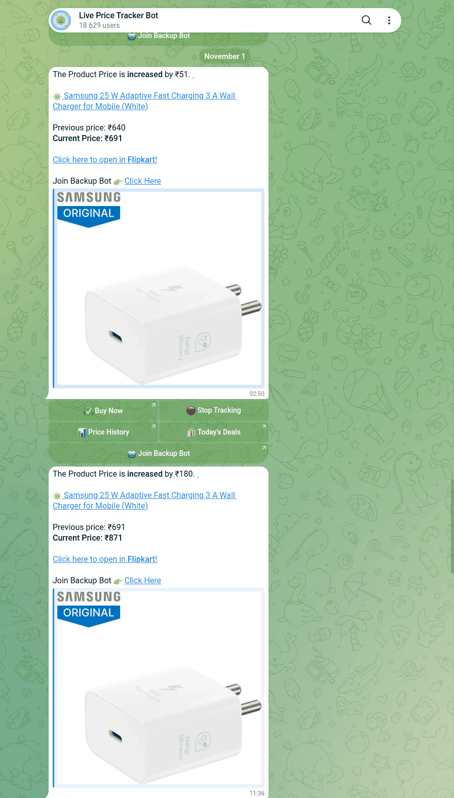

Telegram Price Tracker Bots: 74 Messaged, 9 Got Prices Right
On 25 October 2026 I sent /start to 74 Telegram bots that Telegram’s own search returns for “price tracker” and 19 similar searches. 30 answered. Three nights later the 18 that take a product link got one: a phone on Amazon India, EarPods on Amazon US, screen protectors on Amazon Italy, a charger on Flipkart and on AliExpress, and a Samsung phone on Rozetka in Ukraine. I read every price in a browser within 15 minutes of the send.
Not one bot got a price wrong. Every bot that printed a number matched the store page to the rupee, cent or hryvnia. The failures were elsewhere: channel walls, silence, bots that can’t open Flipkart, one “price tracker” that turned out to be a caller-ID service, and seven bots that hand your link back with their own affiliate tag on it. Then I waited a week for alerts. Two services sent them: one followed every move of a Flipkart charger, and the other sent one alert that the store page doesn’t back up.
How I tested
- Corpus. 20 searches in Telegram’s search box, picked from what Google suggests for “telegram price tracker bot” (Amazon, Flipkart, Myntra, flights) plus the Ukrainian and Russian words. They returned 123 different bots.
- Not every “price” bot tracks shop prices. I left out 52 by their own description before sending anything, mostly crypto, flights and hotels (they want a route and dates, not a link) and Russian-only marketplaces. One Rozetka card bot got
/startanyway through a slip in my list and asked for my phone number, which I didn’t give. - Two web picks from lists that name a handle: @DesiDime_price_tracker_bot and @RateRadar_26_bot. Neither shows up in Telegram search for any of the 20 queries.
- One clean link per store, chosen before the first send by a fixed rule: the highest-ranked physical product on the store’s own bestseller page that shows a price. No
ref,tagor tracking parameters, only the product id. - The price check. A bot’s price counts as right if it equals the store page within 1% or one unit, in the same currency, read in a browser in the same hour. I read every page before the sends and again after them; none changed.
- Alerts. Every watch I could set stayed on for seven days with nothing re-sent. Any alert would be copied word for word.
- Nothing was paid for, no channel joined, no phone number given. After the week every watch was deleted, if the bot had a way to delete it.
Who answered at all
44 of the 74 said nothing within 10 seconds, both web picks included, and 43 were still silent three days later. @DesiDime_price_tracker_bot answered after 12 hours and joined the link test late. The 30 that did answer split like this:
- 17 take a product link. These got the test.
- 6 are mailing lists, all called “Myntra price tracker”. Of the eight Myntra bots search returned, six are broadcast lists from one bot constructor and two are silent; none tracks a price.
/offpaused each list. - 4 do a different job, from a wish-list admin panel to keyword deal alerts from an affiliate feed.
- 2 are closed: “You are not authorized” and “Access denied.”
No bot put a channel wall in front of /start. Two did it later, in front of the link.
Nine bots read the price, and all nine were right
The store prices on 28 October 2026: ₹18,999 for the OnePlus phone on Amazon.in, $19.00 for the EarPods on Amazon.com, €7.89 for the screen protectors on Amazon.it, ₹640 for the Flipkart charger and 39 499 ₴ for the phone on Rozetka (37 524 ₴ if you pay with Rozetka’s own card).
| Bot | Store | Bot said | Watch |
|---|---|---|---|
| @LivePriceTrackerBot | Amazon.in, Flipkart | ₹18,999 · ₹640 | set |
| @The_Price_Tracker_Bot | Amazon.in, Flipkart | ₹18,999 · ₹640 (same reply, word for word) | set |
| @DealTrackerProBot | Amazon.in | ₹18999.0 in 39 s, plus its own 30-day low / high / average | set |
| @DealDropTrackerBot | Amazon.in | ₹18,999, only through its /alert command | alert at ₹18,049 |
| @itemstracking_bot | Amazon.com | USD 19, with a price graph | set |
| @KIRKU_amazon_tracker_bot | Amazon.it | €7.89, plus €10.93 sold by Amazon and €7.73 used | set after 3 taps |
| @LumepriceBot | Rozetka | 39 499 грн in 17 s | set |
| @PricesTrackBot | Rozetka | 39499.00 UAH in 30 s | set |
| @my_pricetracking_bot | Rozetka | 39499.00 UAH in 1 s | set |
A few details the table can’t hold:
- @LivePriceTrackerBot and @The_Price_Tracker_Bot are one service. The two biggest bots in the census (19,307 and 17,423 monthly users, by Telegram’s own count) sent byte-identical replies, the same price-history links and the same deals group.
- @DealDropTrackerBot ignored a bare link. It wants
/alert <link> <target price>, a format it only shows after you press “Track New Deal”. Typed that way, it read the price and set the alert at ₹18,049, 5% under it, which is the target I typed. - @DealTrackerProBot asked for a target price straight after the reading, and ate my next message (the Flipkart link) as “Please enter a valid number”.
- All three Rozetka bots report the regular price, not the cheaper card price that Rozetka shows right under it. @my_pricetracking_bot answered in one second and filed the Samsung as “product ID 69”, so few people use it.
Nine failed, and none of them on the price
- A channel wall on the link (2): @Amazon_Pricehistory_bot and @pricehistbot answered
/startnormally and then wanted a channel subscription before they would read the link. - Stuck (1): @Amazon_Price_Tracker_Alert_Bot said “Now trying to find the price!!” and nothing came after 50 minutes.
- Silent (1): @aliexpress_price_bot answered
/startand never answered the link. - Can’t open Flipkart (2): @DesiDime_price_tracker_bot replied after six minutes that it was “unable to crawl this product as its restricted by Flipkart”, and @DealTrackerProBot, right on Amazon, said “Failed to fetch the page” for the same Flipkart link. @LivePriceTrackerBot and its twin read that link fine. Flipkart blocked me too: every page was “Access Denied” from Ukraine, so I read its price through a VPN.
- Watch set, price never shown (1): @CenaWBbot promises in its welcome text to “show the current price right away”. Forty minutes after the link it still said “Price unknown yet”.
- A twin that shares the database (1): @TrekerCenBot has the same welcome text as @CenaWBbot. When I sent it the same link, it answered “This item is already in your list”. I had sent that link to @CenaWBbot, never to this bot, so the two are one service with one list.
- A lookup, not a tracker (1): @alilesspricebot, for AliExpress, sent prices from promo channels in dollars and Algerian dinars ($1.30 with coins, $7.19 in bundles, $7.09 in super deals). I couldn’t set the AliExpress page to those currencies, so by my own rule these are “not comparable”, not wrong.
One “price tracker” is a call service
One bot with a price-tracker name deleted my first link from the chat. After I chose English and pressed Skip, it said “Registration completed”, offered a $0.10 top-up “for test calls” and the option to change my outgoing number and my voice. The second link got an account card with “Caller ID: Random”, a virtual number and an eSIM. That’s a caller-ID spoofing service wearing a price-tracker name, and I’m not linking it. I paid nothing, shared no phone number and pressed nothing after that card.
Seven bots put their own affiliate tag on your link
I sent clean links, so any tag in the link a bot gives back is the bot’s. The price you pay doesn’t change. What changes is who gets the store’s commission when you buy through the bot’s button.
| Bot | What came back |
|---|---|
| @itemstracking_bot | Amazon tag=hdeal-20 |
| @KIRKU_amazon_tracker_bot | Amazon tag=kirku-21 |
| @DealDropTrackerBot | Amazon tag=vikram02bb-21 |
| @LivePriceTrackerBot, @The_Price_Tracker_Bot | Flipkart affid= with their own extra parameters; on Amazon, no tag |
| @LumepriceBot | “View product” opens its own page, which redirects to a Ukrainian affiliate network with my Telegram user id in sub_id1 |
| @alilesspricebot | six AliExpress affiliate short links; one of them ended on an AliExpress 404 |
Amazon’s affiliate help says a partner’s link carries their tracking ID, and “most often, it will appear as ‘&tag=(store/tracking ID)’ within the URL” (Amazon Associates help). Flipkart’s affiliate documentation uses affid for the affiliate’s id and affExtParam1 / affExtParam2 as sub-ids for their own tracking (Flipkart Affiliate), which is exactly the shape of what @LivePriceTrackerBot and its twin sent back. Three bots gave the link back clean: @PricesTrackBot, @my_pricetracking_bot and @Amazon_Price_Tracker_Alert_Bot, which repeated it. If you’d rather not hand a stranger the commission, copy the product id and open the store yourself.
The sub_id1 one is the one I’d think about. A tag says who referred you. A Telegram user id in the redirect tells the network which Telegram account clicked.
After seven days: two services sent alerts
On 4 November, a week after the links went out, I read every chat again and opened the store pages in a browser. The three Amazon products and the Rozetka phone cost exactly what they did on 28 October. The Flipkart charger didn’t: it went from ₹640 to ₹899.

- @LivePriceTrackerBot and its twin: ten alerts each, within a second of each other. All ten were about the Flipkart charger: four price rises, two drops and four stock changes. It went ₹640, 686, 640, 686, 640, 691, 871, out of stock, back at 686, out of stock again, and back at ₹899 on 4 November at 18:37 UTC. I read ₹899 on Flipkart two and a half hours later. Their welcome text promises an alert “when the price of this product drops”, yet most of what came were rises. One step went unreported: a 30 October drop alert gave the previous price as ₹691, the alert before it ₹686.
- @PricesTrackBot: one alert I can’t confirm. On 4 November at 13:47 UTC it said the Rozetka phone had dropped from 39,499 to 37,524 UAH. Seven hours later the page showed 39 499 ₴ again, with 37 524 ₴ as the Rozetka card price, exactly as on 28 October. @my_pricetracking_bot’s chart for the same link said “No price changes yet”, and @LumepriceBot sent nothing. Either the price dipped for a few hours and only one bot noticed, or this bot read the card price. From outside I can’t tell which.
- Quiet where nothing moved. @DealTrackerProBot, @DealDropTrackerBot (my ₹18,049 target was never reached), @itemstracking_bot and @KIRKU_amazon_tracker_bot sent no alert, and their prices didn’t change. That’s the right answer. KIRKU’s item page did show the offer sold by Amazon itself down from €10.93 to €9.46, but I had asked it to watch all sellers, where the price stayed at €7.89.
- @CenaWBbot still said “Price unknown yet” after a week.
Everything else was marketing. @itemstracking_bot sent a “Top Deals” digest every night, and all 48 Amazon links in the seven digests carried its hdeal-20 tag. @PricesTrackBot sent four cashback lists. @pricehistbot, which never read my link, sent an Amazon coupon link tagged offrz-21.
Deleting the watches
All ten services had a way to delete a watch, and all twelve watches were gone the same night. Most took a tap or two: “Stop Tracking”, “Cancel Alert”, or a delete button and a yes. In @LivePriceTrackerBot and its twin, /list gave the Amazon watch the same stop code, one more sign of a shared backend. @DealTrackerProBot wants /remove 1. @itemstracking_bot lists /del <link> in its own command menu, but that got no reply and the item stayed; the “remove” link inside its /list worked. Deleting the AliExpress item in @CenaWBbot also emptied @TrekerCenBot’s list.
Which one I’d use
- Amazon India: @DealTrackerProBot, for the 30-day low and high it shows with the price. Know that it wants a target price next. It stayed quiet all week, and so did the price.
- Flipkart: @LivePriceTrackerBot (or its twin, not both). It was the only one that opened my Flipkart link, its last alert matched the page, and its Flipkart button carries its affiliate id. Expect rises and stock changes as well as drops: ten alerts in a week for one charger.
- Amazon US or Italy: @itemstracking_bot for the US (US store only, it says), @KIRKU_amazon_tracker_bot for Italy. Both tag the link they return.
- Rozetka: @my_pricetracking_bot: the right price in a second, a clean link, and no false alarm. @PricesTrackBot also gives a clean link, but its one alert didn’t match the page and it sends cashback ads. @LumepriceBot routes “View product” through an affiliate network with your user id.
- Myntra and AliExpress: nothing here tracked them: @CenaWBbot took the AliExpress link but never found a price, and @alilesspricebot only looks up promo prices.
A Telegram bot with no affiliate tag
The free Party Game runs Truth or Dare, Never Have I Ever and Would You Rather as a Mini App inside Telegram, in English or Ukrainian. No channel to join, no watch list, nothing to buy and no links with someone else’s tag in them.
Open the Party Game Want to turn a product photo or a PDF into something else? See the converter bots I tested.FAQ
Do Telegram price tracker bots show the right price?
The ones that answered did. On 28 October 2026 nine bots read a price for links from Amazon, Flipkart and Rozetka, and all nine matched the store page in the same hour. The failures were walls, silence and bots that couldn’t open Flipkart.
Is there a Telegram bot that tracks Flipkart prices?
@LivePriceTrackerBot and @The_Price_Tracker_Bot (one service, identical replies) read my Flipkart link correctly. Two other bots that claim Flipkart support couldn’t fetch the page.
Is there a Myntra price tracker bot on Telegram?
Not among the eight Telegram search returned in October 2026: six are mailing lists named “Myntra price tracker” and two didn’t answer. /off pauses the lists.
Why does the bot’s link have a tag in it?
It’s an affiliate tag. Seven of the bots I tested added their own (tag= on Amazon, affid= on Flipkart, or a redirect through an affiliate network) to a link I had sent clean. You pay the same price, and the bot’s owner earns the commission.
Do Telegram price tracker bots actually send alerts?
Some do. In seven days @LivePriceTrackerBot and its twin sent ten alerts each for one Flipkart charger, rises and stock changes included, and the last matched the store page. @PricesTrackBot sent one Rozetka alert the page didn’t back up. Bots watching Amazon prices that never moved stayed quiet.